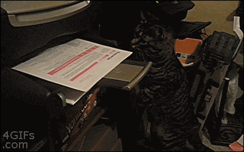
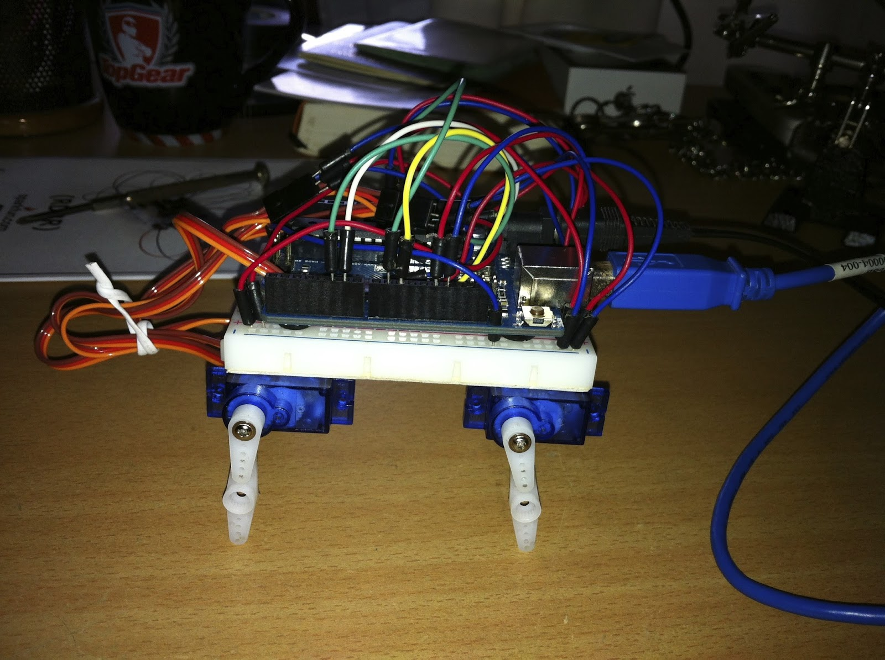
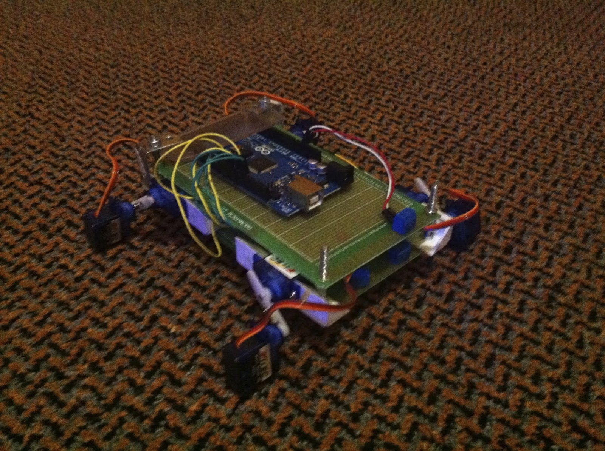
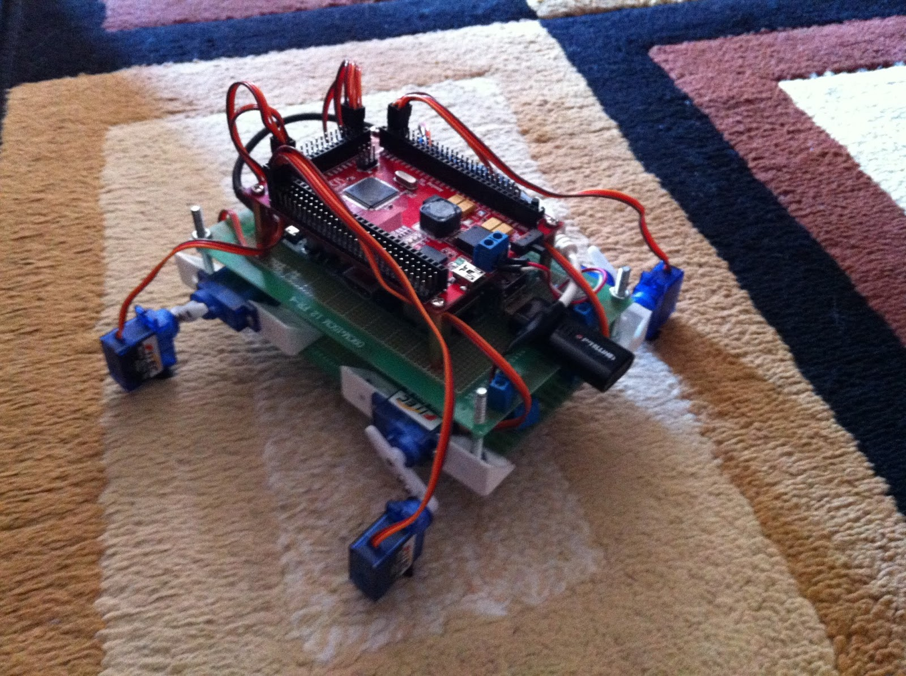

A Software Developer's Experience Building a Robot
Part 1: Legs
2013-08-25 Updated 2025-12-31 · 1f8c246This will be part one in a series where I (a software developer) share my experiences in an attempt to build a fully wireless robot. The purpose of this is to hopefully help other developers who might be interested in the subject learn from my mistakes, or for engineers to have a good laugh.
The Software
Before actually buying any hardware I decided on a software stack, the stack I chose consisted of:
- Raspberry Pi with wifi dongle
- Arduino microcontroller
- Firmata
- Johnny-five
The concept is that I would be running JavaScript on the Pi which would in turn instruct the Arduino and tell the robot what to do.

Now this may seem a little odd to those who are used to using the Pi for everything, but since I had no experience with the Pi GPIO (and didn't want to fry a $40 board) I decided to let the Arduino do the dirty work.
One hurdle that I hit early on though was that the default package manager on the Pi doesn't have a recent version of Node.js, so I had to compile my own, this process takes around 3 hours on the Pi, so it was a perfect time to watch the extended edition of one of the Lord of the Rings films.
First Robot
The first design was simply a breadboard and Arduino Uno taped to four servos, giving the robot the look of a knee-less quadruped.

This design while up and running took ages to move anywhere, and the only thing keeping it from going in circles was the weight of the USB cable.
Second Robot
After taping another 4 servos onto the legs, I had another iteration of my bot. An Arduino Mega was also now required since I had run out of PWM pins on the UNO. The platform had also changed from a breadboard to a bigger breadboard and the servos were attached with two sided tape.

This version of the bot brought two problems to my attention that I would deal with for the rest of this project:
- Weight
- Power
All 8 of those servos consumed more power than could be provided over USB and as a result required me to disconnect 4 during development and plug them all into a 9V Power source. I also had to add a 9V battery to the platform.
Third Robot
Because the servo legs kept on falling apart under the weight of the bot, I moved onto a platform made of prototype boards layered on top of each other using copper standoffs, and plastic brackets from the local hardware store used to attach the servos.

The nice thing about this design was its modularity, any leg could be removed and worked on without affecting other parts. Parts from this version would also be reused for completely different projects.
Fourth Robot
At this stage of the bot the USB cable had to go, that meant getting something that could run JavaScript on board. A Raspberry Pi was mounted on the platform along with a servo controller specifically designed to sit on the Pi's copper standoffs.

The weight and power problem however began to intensify, servo legs have to constantly hold themselves up against gravity, making the whole bot collapse when powered down and draining batteries really fast. The Pi also takes power to run and having 2 LiPo cells in series was not enough to prevent the Pi from rebooting every time more than one servo started moving at once.
The Next Steps
Legs use way too many power hungry servos and the weight problem would only get worse as I added more and more to the robot. So as a result, I have gone a little bit overboard and decided to switch to tank treads.
Stay tuned for Part 2 where I explore the tank tread approach.
Originally posted on Blogspot